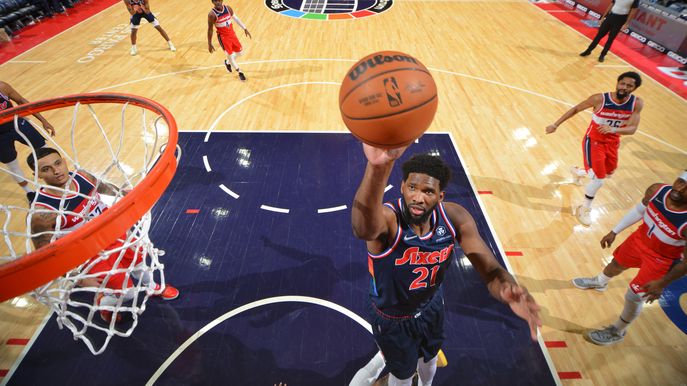

NBA ARTICLES
POWER RANKINGS
Power Rankings, Week 17: Suns hold No. 1 spot before Finals rematch this week
See where all 30 teams rank after the first 16 weeks of the 2021-22 season.
John Schuhmann

Devin Booker and Phoenix will face Giannis Antetokounmpo and Milwaukee on Thursday for the first time since The Finals.
The trade deadline is three days away, the All-Star break follows a week after that, and the season is about two-thirds complete (65% through Sunday). So this may be a week where we’re not too focused on the results of the games.
But this is the week that brings us our first Finals rematch, with the Milwaukee Bucks visiting the Phoenix Suns on Thursday. And despite the off-court distractions, it’s a good time for it. The Suns saw their 11-game winning streak come to an end last week, but they continue to take care of business, and they got their two injured starters back on Tuesday.
The Bucks, meanwhile, are maybe starting to put their foot on the gas, winning their last three games by an average of 22 points. Last year’s Finals gave three thrilling games, with Giannis Antetokounmpo capping the series off with a 50-piece in Game 6. So maybe we’ll get something special when the two teams meet again on Thursday night (10 p.m. ET, TNT).
Phoenix — There are currently nine teams that have won more than 60% of their games. And while the Suns have a three-game edge in the loss column on all the rest, they’ve played the fewest games (they’re 6-4) within that group. In fact, they’ve played only five of the other eight teams, having faced the Warriors three times and the Cavs, Grizzlies and Jazz twice each. But the Suns will play the other three in the next four days. They’ll complete their four-game road trip with a back-to-back in Chicago (Monday, 8 p.m. ET, NBA TV) and Philadelphia (Tuesday). Then they’ll return home to face the Bucks on Thursday (10 p.m. ET, TNT), rounding out their week with a visit from the team with the league’s worst record (Orlando) on Saturday.

Siakam, Ingram named Players of the Week
The former All-Star forwards claim the honors for Week 16.
4 hours ago
10 things to know from the past 7 days in NBA
All-Star reserves announced, trade season gets underway, Embiid's streak continues and more from Week 16 in the NBA.
4 hours ago

Nash says Nets won't trade Harden
Brooklyn's coach shot down trade rumors involving the former MVP before the Nets...
24 hours ago

Cavs acquire swingman LeVert in deal with Pacers
Cleveland has traded Ricky Rubio to Indiana in the deal to acquire a talented...
9 hours ago

LeBron drops triple-double in victorious return
After missing 5 straight games, LeBron James returned to the lineup for L.A., which went 1-4 in his absence.